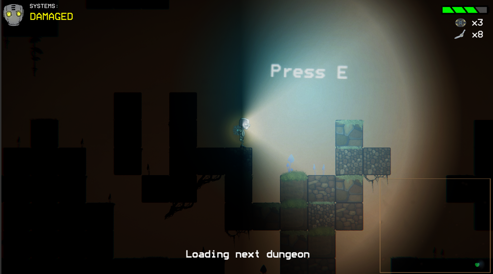

Developers Marc Skaarup
Tyler Larican
Lloyd Deng
Jake Stewart
Grapple Gang
A fast-paced, action-packed, four-player game that is centered around a grappling mechanic. Each player is able to grapple onto walls and objects and cant hit other players with it. The grapple is the only way to move, and players must use them to hit other players, move themselves around, and dodge incoming objects in order to win the game.
Game Pitch Game Design Doc The Game (click to play)
Developers: (Geek Gang)Jayden Stipek, Jeffrey Murray
Christopher O'Keefe, Andy Tran
Cole Liu
Geek Gang: Hotel RedRum
Hotel RedRum is a 2D rouge-like Dungeon-Crawler which starts you off inside a haunted hotel, in which your goal is to escape.You play as Casper the hotel's bellhop who one day finds his world flipped on him.
Can you help Casper find his way out of the hotel ALIVE?
Game Pitch
Game Design Doc
To play
The Game: WebGL-click to play
PC EXE (download to unzip)
MAC EXE (download to unzip)

Blue Team Jonathan Acoltzi
Yuto Akutsu
Abdelrahman Alajrami
Alex Earll
Artist Lauren Blinn
Dungeon Hook
Dungeon Hook is a 2d side scroller set in a medieval world where you play as a master thief who can traverse the world with a grappling hook allowing them to negotiate obstacles and fight enemies in a fun and dynamic way.
Game Pitch
Game Design Doc
To play
The Game: WebGL-click to play
PC EXE (download to unzip)
MAC EXE (download to unzip)

Developers Josh Kennedy
Aaron Handjojo
Quan Nghiem
Colby Easton
App Name: Shifters
Shift between dimensions as you fight against rogue AI in outer space.
Game Pitch Game Design Doc The Game (click to play)

Developers Adriana Padilla
Greg Smith
Artist Noreen Nelson
Plus 2 Studios: Quarrelsome Coral
Quarrelsome Coral is a 4-Player cooperative exploratory adventure game where players are confined in a submarine. Inside the submarine players must cooperate and communicate with each other, prioritizing different stations depending on the crew’s current needs.
Game Design DocumentProject proposal
To play
Download Game (PC)
Download Game (Mac)
Web Build


Developers Tung Dihn
Elijah Edwards
Chandler Mendoza-Eastman
Kylun Robbins
Famine Fighters:
Famine Fighters is a 2D platformer with 5 total levels filled with a variety of obstacles and enemies.
The player is able to control 3 different characters, TMNF, Not Finn, and VRBlues. Each character has a unique ability, TMNF being able to double jump, Not Finn being equipped with a dash, and VRBlues is able to reverse gravity.
Game Pitch Game Design Doc The Game (click to play)
Developers
Conrad Dudziak
Mark Sorvik
Rachel Atijera
Aaron Jacobson
Cellular:
Cellular is a two-player turn-based strategy game where players use six sided germs to equip
weapons and attachments, and try to destroy other germs to defeat their opponent.
Game Pitch
Game Design Doc
To play
The Game: WebGL-click to play
PC EXE (download to unzip)

Developers Joshua Landron
Sean P Miles
HsinYu “Katie” Chi
Sounds and Music
All Music Licensed under Creative Commons: By Attribution 3.0
Explosion Sound by steveygos93
Item Pickup, Interact, Laser Sound by Little Robot Sound Factory
Shadowlands 1 - Horizon and Floating Cities by Kevin Macleod
Art
In Game 2D pixel art from craftpix.net
As well as art drawn by HsinYu Chi
Team Awesome: Dusk
Dusk is a single-player 2D Roguelike where you, a robot named DU-5K, explore a bleak near-future, post-apocalyptic world after catastrophic events bathed the world in smog and darkness. Venture into randomly generated underground dungeons and survive the darkness and the corrupted drones that lie within. Collect scrap to upgrade your parts and descend further below, but don't let your battery die or you will be left alone in the shadows.
Game Pitch
Game Design Doc
To play
The Game: WebGL-click to play
PC EXE (download to unzip)
MAC EXE (download to unzip)
